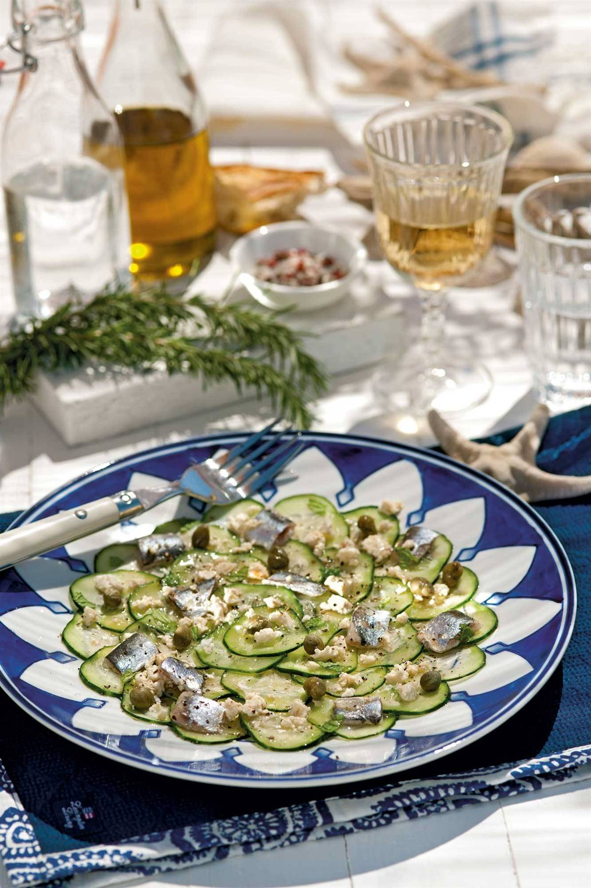

ENSALADA CON NARANAJA, QUESO Y PISTACHOS
INGREDIENTES: 9
PERSONAS: 4
TIEMPO 20 MIN Ver Mas
ENSALADA CON NARANAJA, QUESO Y PISTACHOS
Precio:$
700

ENSALADA SENCILLA Y SALUDABLE CON AGUACATE
INGREDIENTES: 11
PERSONAS: 4
TIEMPO 35 MIN Ver Mas
ENSALADA SENCILLA Y SALUDABLE CON AGUACATE
Precio:$
850

CARPACCIO DE PEPINO CON SARDINAS
INGREDIENTES:10
PERSONAS 4
TIEMPO 35 MIN Ver Mas
CARPACCIO DE PEPINO CON SARDINAS
Precio:$
790